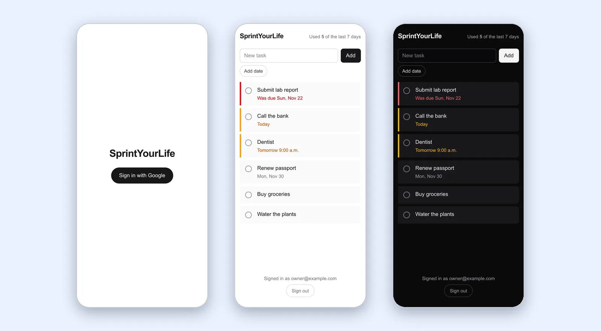

Étude de cas · Projet personnel en cours
SprintYourLife
Une application web pour remplacer le défilement par des « quêtes secondaires », et surtout un terrain d'essai du développement dirigé par les spécifications avec l'IA agentive.
Technologies
En direct du dépôt
Le projet avance en ce moment. Ce panneau lit le dépôt GitHub public à chaque visite.

Le besoin
Dans les moments creux, je prenais mon téléphone et je défilais par défaut. Mes idées de choses à apprendre existaient, éparpillées dans des notes, mais elles n'étaient pas devant moi au moment de choisir. Mes obligations, elles, fonctionnaient parce qu'elles avaient des échéances. L'application réunit donc les tâches et les quêtes secondaires au même endroit, et découpe les objectifs en sprints de deux semaines avec un critère mesurable.
La démarche : la spec d'abord
La documentation est la source de vérité. Aucun code n'est écrit sans spec validée, et quand le code et la spec divergent, c'est la spec qui gagne, ou elle est modifiée volontairement dans une nouvelle version.
Spec
Récits utilisateur, critères d'acceptation Given/When/Then, règles d'affaires numérotées, questions ouvertes et leurs réponses, liste d'UAT.
Plan et ADR
L'IA propose des options avec une recommandation; je décide. Chaque choix important devient un Architecture Decision Record.
Tâches, code et tests
Petites étapes avec un « terminé quand », des points de contrôle où le travail s'arrête pour moi, et un journal de preuves.
UAT
Je teste en production, sur mon vrai téléphone, avant de déclarer une spec livrée. Les frictions repartent dans le carnet.
Travailler avec l'IA agentive
La majeure partie du code est écrite par Claude Code. Mon travail, c'est l'analyse, les décisions et leurs raisons, les critères d'acceptation et la vérification de ce que l'IA produit.
- Valider, pas seulement accepter. Un choix de bibliothèque d'authentification reposait sur une information dépassée. La décision n'a pas été effacée : un nouvel ADR (0011) la remplace et explique pourquoi.
- Des points de contrôle explicites où l'agent s'arrête et attend ma décision, au lieu de foncer sur une hypothèse.
- Des preuves pour chaque critère : l'agent consigne comment chaque critère d'acceptation a été vérifié, et je le revalide en UAT.
- Des garde-fous dans le dépôt : règles d'affaires isolées dans un module pur, imposé par une règle de lint; rien n'entre sur main sans CI verte.
Une exigence, de la spec à la production
La traçabilité est concrète : chaque règle a un identifiant qu'on retrouve jusque dans le nom des tests. Exemple avec BR-5, « une tâche est en retard quand sa date est passée ou, si elle a une heure, quand cette heure est passée ».
- Spec : la règle BR-5 et le critère AC-2.3 (une tâche en retard affiche « Was due… » en rouge).
- Code : une fonction
isOverdue()dans le module de domaine, sans cadriciel ni base de données. - Test unitaire « isOverdue (BR-5) » : les cas limites (minuit à Toronto, la minute exacte, aucune date).
- Test de bout en bout nommé d'après AC-2.1 à AC-2.6, dans un vrai navigateur sur une version de production.
- CI sur chaque demande de fusion, puis UAT sur le téléphone.
Ce que j'en retiens
Une bonne spec est le meilleur levier qu'on a sur un agent de code : plus les critères d'acceptation sont précis, moins il y a d'allers-retours, et plus la vérification est simple.
La suite : la spec 004, la banque de quêtes secondaires, est validée et prête à planifier. Le panneau ci-dessus suit son avancement.